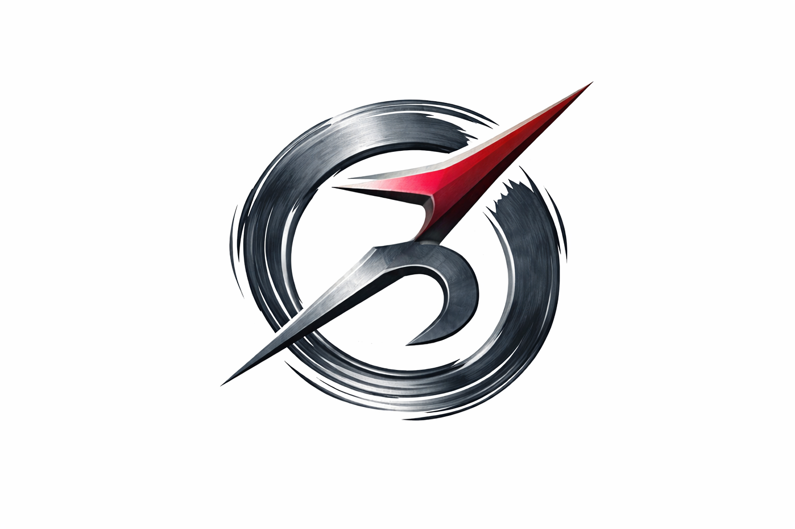
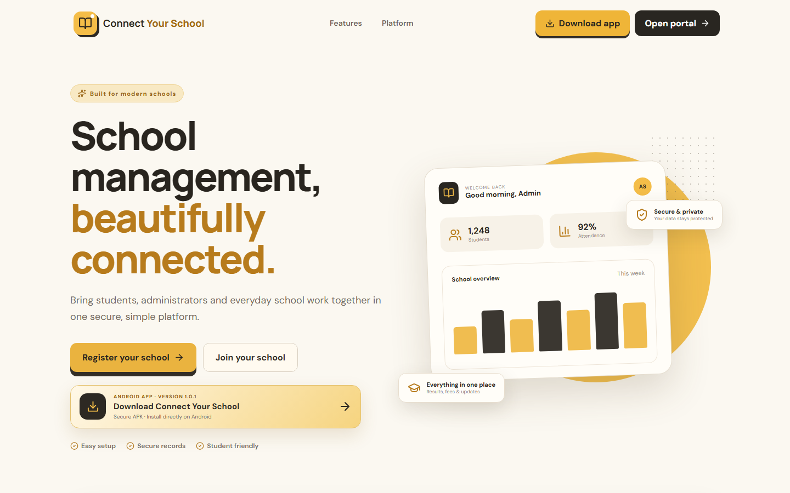

Strategy before output.
We understand the business, audience and buying journey before deciding what should be designed, built or promoted.

Design / Technology / Growth
Portfolio / 2026Scroll to enter
Websites, products and growth systems designed to make businesses impossible to ignore.
Enter the work↓We understand the business, audience and buying journey before deciding what should be designed, built or promoted.
Identity, websites, content and campaigns are designed as one operating system, so every touchpoint reinforces the next.
We measure attention, enquiries and conversion, then keep improving the parts that move the business forward.
The BeyondNull approach
We do not decorate screens. We engineer attention, clarity and movement across every digital touchpoint.
These are selected windows into a wider body of work across commerce, education, hospitality, wellness and software. Move through them one at a time, or skip straight into the growth engine.
Brand-led web experiences built around the way each business needs to look, feel and convert.
BeyondNull connects creative, media and technology into one operating system. We shape the message, produce the content, find the audience and keep improving what converts.
Across selected client campaigns
Generated through performance systems
Followers built across key platforms
Bella Casa, within three months
Positioning, campaign ideas, social calendars, short-form video and design systems that stay recognizable.
Audience strategy, lead campaigns, creative testing and continuous optimization around commercial goals.
Planning, publishing, community momentum and reporting across Instagram, Facebook and LinkedIn.
SEO, Google Business Profile and conversion-focused pages built to capture high-intent demand.

Local visibility and qualified enquiry campaigns powered by short-form content and performance media.
5.6M views / 1,129 leads
City-wide awareness, consistent content and targeted promotion designed to increase real-world footfall.
4.1M views / 1,019 leads
Product discovery and local relevance turned a showroom into a visible digital destination.
40K+ Facebook audienceBeyondNull develops the positioning, content pillars and publishing rhythm behind professional visibility. The goal is not activity for its own sake, but a profile people understand, remember and trust.
Built from zero through a focused content system combining practical business thinking, marketing observations and data-led storytelling.
Built a clear specialist position around social media management, supporting consistent visibility and inbound enquiries.
Open profile ↗Developed a content position around business, marketing and data-driven thinking to expand professional relevance and network reach.
Open profile ↗Shaped LinkedIn content and personal-brand communication to strengthen profile clarity and professional visibility.
Open profile ↗Owned digital products shaped from real operational problems, designed to turn scattered work into one clear system.
A connected operating layer for modern schools.
Built for institutions that are still juggling admissions, communication and daily administration across disconnected tools. Connect Your School brings the important work into one focused platform.

CYS / 01The control room behind consistent social media.
Created for teams that need more than another calendar. Social Controller organizes planning, approvals, execution and visibility so content operations keep moving without losing the strategy.
 SC / 02
SC / 02From the first strategic decision to the product, campaign and growth system behind it, BeyondNull can build the complete digital direction.
Start a conversation↗